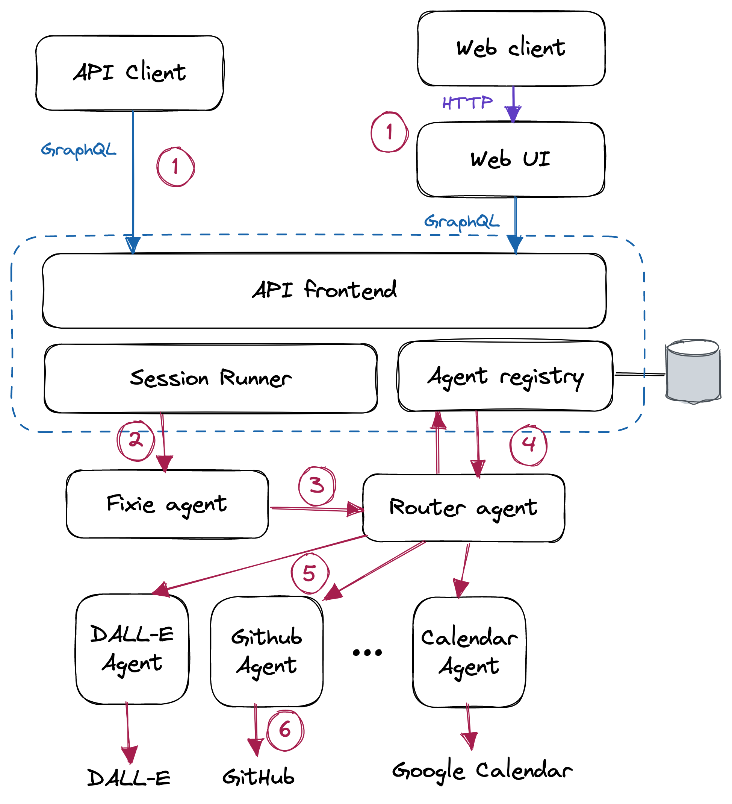

Fixie Architecture Overview
This page provides a technical overview of the Fixie platform, specifically focusing on the programming model used to build applications with Fixie.
System overview
The diagram below is a high level sketch of the Fixie platform.

The Fixie system consists of a cloud-hosted API (app.fixie.ai) which provides a GraphQL-based API endpoint to clients, and a set of Agents that each have a specific set of skills, such as accessing a remote API, pulling data from a database, summarizing text, and so forth.
The core Fixie service runs on the cloud or on-prem in a customers environment. Agents can run anywhere: Hosted by Fixie, hosted by a customer, or hosted by third parties. Each Agent is its own independent microservice. Fixie's Agent registry maintains metadata about each agent, including its description, owner information, and the URL on which messages can be sent to the Agent.
GraphQL API
The Fixie GraphQL API allows clients to interact with the system in a number of ways:
- Query the set of Agents in the system, returning metadata about each Agent such as the name, owner, set of example queries that the Agent supports, etc.
- Register a new agent (described in the Creating an Agent section below).
- Create, list, and delete Sessions. A Session can be thought of as a chat session with the Fixie system, between the client and one or more Agents.
- Post a Message to a Session, which sends a new query to Fixie for processing by the system.
- Retrieve the Messages in a Session, including those Messages sent by Agents.
Example query flow
To illustrate the system working end-to-end, lets walk through what
happens when a client issues a query, such as "Schedule a 30-minute
meeting with Zach sometime between now and next Tuesday".
The red circled numbers on the diagram above refer to each of the steps below.
- The client issues the query by posting a message to a Session, via the GraphQL API (or, equivalently, via the web playground).
- The Session Runner dispatches the users query to the Fixie Agent.
The Fixie Agent is the first Agent in the query sequence, and is
responsible for taking the users query, breaking it into steps, and
dispatching it out to one or more Agents for processing of those
steps. Think of the Fixie Agent as a virtual machine that runs the
program specified by the users query. The Session Runner is responsible
for maintaining the running chat log of the session, and providing
this context to the Fixie Agent. For example, if the following query
were something vague, like
"When is it?", the Fixie Agent could disambiguate this to mean"When is the meeting that you just scheduled?"based on the session history provided by the Session Runner. - For each step in the program, the Fixie Agent calls out to the Router Agent to determine which Agent(s) need to be invoked to run that step of the query.
- The Router Agent consults the Agent Registry, which contains metadata
- about each Agent, including the Agents name, owner, and (critically)
- the sample queries that the Agent can support. For example, the
- GitHub agent can support a
wide range of queries about GitHub-related things, such as
"How many pull requests are open in fixie-ai/fixie?". When an Agent is registered with the system, it stores its sample queries in the registry, which the Router Agent uses to determine which queries should be routed to that Agent. - The Router determines which Agent to send the query to by using a neural search that maps the users query into a high-dimensional embedding space, and compares it to the sample queries for each of the Agents in the system. The Router sends the users query to the Agent that most closely matches the sample queries for that Agent.
- The Agent (in this case, perhaps the Google Calendar Agent) gets the query and executes it. This is typically done by using a large language model such as GPT-3 to interpret the query and invoke one or more external systems to generate a response. In the case of the example query given above, this would entail querying the users own calendar for available time slots, querying Zachs calendar for available time slots, finding a suitable time that works for both parties, and then scheduling the meeting. Well describe this process in more detail in the Agent Execution section below.
- Finally, the response from the Agent is returned up the chain back to the Fixie Agent, which may decide to compose and send a final response to the user, or invoke other steps of the program involving other Agents. The response message is stored in the Session associated with this query, as well as returned to the client application. (The response path is not shown on the diagram for sake of simplicity.)
Query message format
Queries in Fixie consist of two parts: A plain-text Message along with zero or more Embeds. Concretely, a query message in Fixie is a JSON object that might contain:
{
"text": "Mask out the background in #1",
"embeds": {
"1": {
"content_type": "image/png",
"uri": "https://app.fixie.ai/attachment/21cfa1...",
}
}
An Embed is very much like an email attachment: it is a binary
object with an associated MIME type, such as image/png or
text/plain, that is carried along with the query. Agents can
access the Embeds associated with the query, and optionally create
new Embeds that represent the result of some data processing or
generation. As an example, the DALL-E and Stable Diffusion Agents
both create Embeds for the images they generate. The Masker agent
takes an image Embed and generates a binary mask representing
portions of the image that contain a given object or material
(e.g.,whatever is in the background of the image).
Embeds are immutable once created. They are stored in a Fixie-managed cloud storage bucket, and are passed by reference (specifically, using a signed URL) along with the query.
The text of the query can refer to an Embed using its key in the
message. In the above example, the Embed key is 1, and the query
refers to it using #1.
Creating an Agent
A Fixie Agent is just a program that accepts a query (text with optional embeds) in the format shown above, and returns a reply in the same format. An Agent can run anywhere on the Internet; Fixie only needs to know the URL to post the query message to over HTTP. The simplest possible Agent, implemented in Python, might look like this:
from flask import Flask, request
app = Flask(__name__)
@app.route("/", methods=["POST"])
def agent():
query = request.json["text"]
embeds = request.json["embeds"]
# Do something with the query...
return {"text": "Hello, world!"}
That’s it! Sending a POST request to the Agent’s URL will return a reply "Hello, world!".
Of course, most Fixie Agents will want to use a large language model to process incoming queries and generate responses. There are two ways of doing this in Fixie.
Fully custom Agents
An Agent can essentially do anything it likes with the input query. The most common pattern here is to directly call a Large Language Model. on its own, e.g., via the OpenAI GPT-3 API. Fixie is agnostic as to how the Agent performs its query processing; it could use GPT-3, a fine-tuned variant like InstructGPT, or a fully custom model provided by the Agent developer or a third party. Libraries like LangChain are sometimes helpful in interfacing the LLM to external code.
Instead of using an LLM directly, an Agent can also just be a simple wrapper around a third party AI-powered service that can perform tasks such as text summarization, text generation, search, etc. Building an Agent that wraps, for example, Jasper.ai, Instructive.ai, or Copy.ai is quite easy to do. The benefit of this approach is that those siloed products suddenly become interconnected and composable with the rest of the capabilities in the Fixie ecosystem.
Code Shot Agents
In addition to the roll your own approach with custom Agents, Fixie provides a novel programming model for building Agents that we call Code Shots. In Large Language Models, the term few shots refers to a set of examples that can be provided to the model that instructs it to perform a specific task. Code Shots are essentially few shots enhanced with embedded code.
This is probably best understood through an example. The following Code Shots manifest creates an Agent that understands how to translate English queries into stock price lookups:
import fixieai
import requests
BASE_PROMPT = "I am an Agent that answers questions about stock prices."
FEW_SHOTS="""Q: What is the current price for SYMBOL?
Ask Func[quote]: SYMBOL
Func[quote] says: $123.45
A: The current price for SYMBOL is $123.45.
Q: SYMBOL share price
Ask Func[quote]: SYMBOL
Func[quote] says: $34.52
A: The share price for SYMBOL is $34.52.
Q: Price for SYMBOL
Ask Func[quote]: SYMBOL
Func[quote] says: $99.11
A: The share price for SYMBOL is $99.11
"""
agent = fixieai.CodeShotAgent(BASE_PROMPT, FEW_SHOTS)
API_KEY = "..."
@agent.register_func()
def quote(query):
symbol = query.message.text
url = f"https://www.alphavantage.co/query?function=GLOBAL_QUOTE&apikey={API_KEY}&symbol={symbol}"
response = requests.get(url)
raw_price = response.json()["Global Quote"]["05. price"]
dot = raw_price.index(".")
return raw_price[:dot+3]
agent.serve("stockquote")
This is the entire code for the stock quote Agent. The code manifest consists of a set of few-shot examples (example queries and responses), coupled with a little bit of Python code that knows how to invoke an external API to fetch a stock quote.
With Code Shots, the Agents functionality is partitioned across two domains: the language processing (done centrally, by Fixie), and the low-level Func invocations (done within the Agent's own sandbox, either in the customers infrastructure or within an environment that is hosted by us). Because a Func does not need to perform any language processing, it is just a simple function!
Let’s walk through what happens when a query comes into a Code Shot Agent.
- The Agent gets a query like
"What is the stock price for GOOG?" - Fixie takes the users query, along with the few-shot examples
in the Code Shots manifest, and passes them to a LLM for processing.
Note that this language processing is being done centrally, by
Fixie, meaning we can automatically select the best LLM and prompt
to handle the query, as well as augment the prompt with relevant
context and session history. 3. In this case, the output of the
LLM will be something like
Ask Func[quote]: GOOG. This is basically saying that Fixie needs to invoke this low-level Func to perform the next step of processing. Fixie invokes the Func by sending a REST call over HTTP to the Agents URL, and getting back the response. - Fixie then feeds the Funcs response back into the LLM, again
with the appropriate prompt and context, to continue processing the
query. In this case, the LLM will generate a response like
"A: The share price for GOOG is $105.22". 5. The final reply is sent back to the client, or the Agent that issued the original query.
There are a few key things to note about Code Shots.
- First, they make it really easy to build new Agents, since the only thing the developer needs to do is write a few English-language examples of what the Agent does, along with, possibly, one or more simple Funcs that hook into the query processing logic.
- Second, Funcs need not be private to individual Agents: We are building an entire library of Funcs that Agents can use, including Funcs that evaluate simple computational expressions, fetch data over HTTP, and so forth. Many Agents can be built without implementing any new Funcs, just by calling existing ones.
Registering an Agent
Fixie users can create and register their own Agents in the system either via the GraphQL API or through the web interface. The only thing needed to create an Agent is to give it a name, a short description of what it does, and a URL to which Agent queries should be sent.
Authentication
Fixie ensures that all requests flowing through the system are associated with an end user. A user can get a Fixie account by visiting the web UI (https://app.fixie.ai) and signing up using email, a Google account, or a GitHub account. To access the Fixie GraphQL API, the user can get an API key from their profile page on the site.
The API key must be provided in an Authorization: Bearer header
when making API calls. The API key itself is a JWT, signed by the
Fixie service, that identifies the user associated with the query.
When Fixie sends a request to an Agent, the request carries with it a JWT (again, signed by Fixie) that identifies the user and the chat session ID. The Agent can verify that an incoming query is in fact coming from Fixie by checking the signature of this JWT. When the Agent wishes to send a query to another Agent, or invoke one of the API endpoints provided by Fixie, it must provide this JWT to prove that the request is being made in the context of an actual user query.
Usage limits
Fixie imposes generous usage limits on individual users and Agents to prevent abuse. We currently have a per-user daily limit of 1000 queries. If this turns out not to be adequate we can raise the limit or allow users to purchase additional credits. Agents invoking Fixie APIs, such as the User Storage mechanism described below, also have a rate limit on those calls. Code Shot Agents that use Fixies language processing capabilities will additionally have a limit on the number of tokens they can pass through the Fixie-provided LLM API in a given time period.
User Storage
Agents often need to maintain state associated with a given user or chat session in which they are involved. While Agents could simply implement their own mechanism for this (e.g., writing data to a database or a cloud storage bucket), we provide a simple API in Fixie for this purpose. Fixies User Storage component is a simple key-value store, allowing Agents to store and retrieve binary blobs associated with an Agent-provided key. This is akin to cookies in a browser context, allowing Agents to stash away information that they might need to access later.